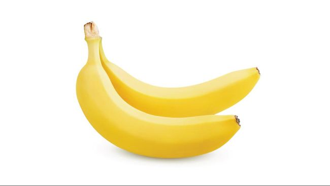

tentangbuah.com
Pisang
Pisang adalah nama umum yang diberikan pada tumbuhan terna raksasa berdaun besar memanjang dari suku Musaceae. Beberapa jenisnya (Musa acuminata, M. balbisiana, dan M. ×paradisiaca) menghasilkan buah konsumsi yang dinamakan sama. Buah ini tersusun dalam tandan dengan kelompok-kelompok tersusun menjari yang disebut sisir. Hampir semua buah pisang memiliki kulit berwarna kuning ketika matang, meskipun ada beberapa yang berwarna jingga, merah, hijau, ungu, atau bahkan hampir hitam. Buah pisang sebagai bahan pangan merupakan sumber energi (karbohidrat) dan mineral, terutama kalium.